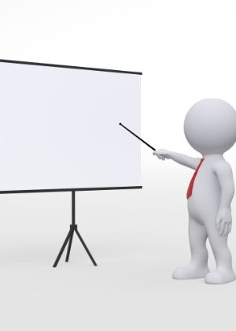

Bem-vindos ao meu site :)

Sobre mim:
Olá pessoas, eu me chamo Maria Eduarda, tenho 18 anos, atualmente resido no Benedito Bentes e estou cursando o 2º ano na escola Sesi e faço ensino médio juntamente com o técnico em informática para internet.
Minhas habilidades:
- Comunicativa
- Trabalho em equipe
- Proatividade
Projetos
- Iniciação científica
Em posição de um dos líderes, desenvolvo o projeto Bandervas, onde criamos algo totalmente inovador para a indústria, em parceria com a Fapeal e instituição Sesi;
- Sapiens Lab
Roda de conversa, onde nela escolhemos um livro para ler e logo após a leitura debatemos sobre os assuntos que contém no livro trazendo eles para a realidade das pessoas presentes
Formas de contato:
- Instagram:
_.maria_duh._
- Whatsapp:
(82) 9 8863-1814
- E-mail:
maeduardate@gmail.com